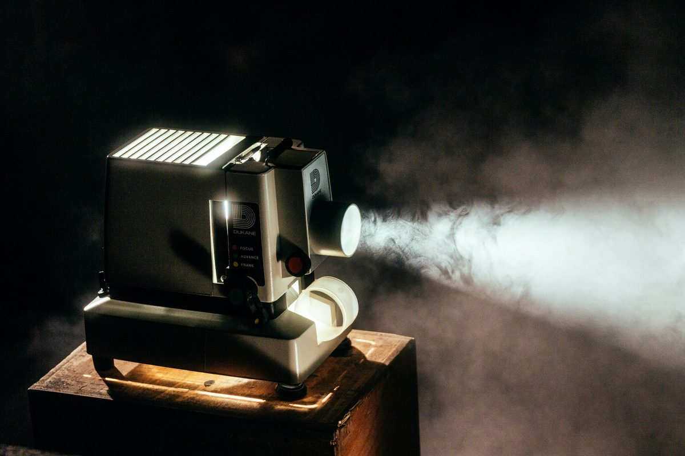

← All work
04 / 07 · Event branding
Community film festival, 7 screens · 2025
Low Light Film Week
A festival identity built from one circle of projector light.

- Role
- Identity, posters, print, wayfinding
- Client
- Community film festival, 7 screens
- Discipline
- Event branding
- Year
- 2025
The brief
A seven-day festival with no photography budget needed posters, passes, social posts and signs that work in a dimmed hall, and that volunteers could extend themselves.
Delivered
- Festival identity
- 3 posters
- Tickets and passes
- 12 social templates
- Wayfinding signs
- Tote bag
Why it works
Every piece reuses the same circle, so a volunteer with the template can make a new poster in about 20 minutes.
Night
#0B0B0B
#0B0B0B
Lamp
#F2A33A
#F2A33A
Red
#E0482F
#E0482F
Heavy grotesque for titles, regular sans for times and screens